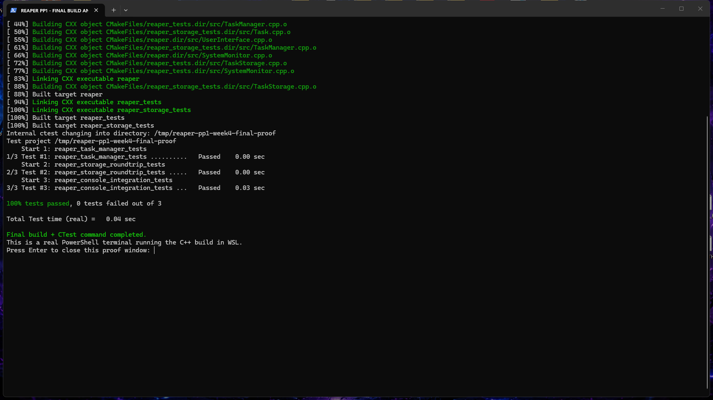
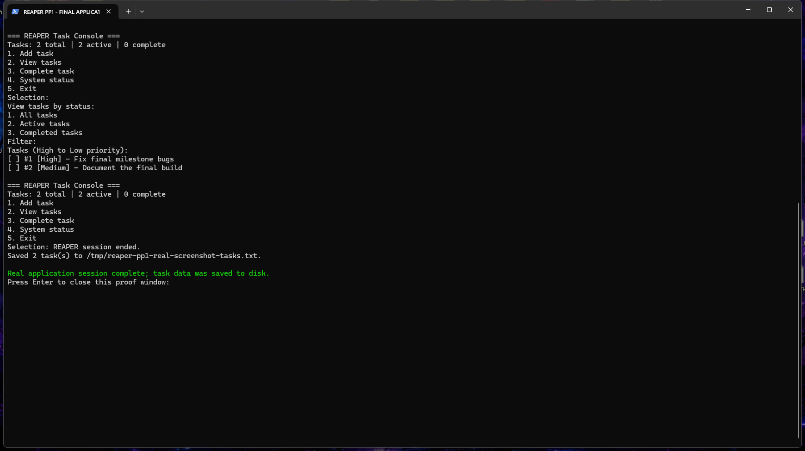
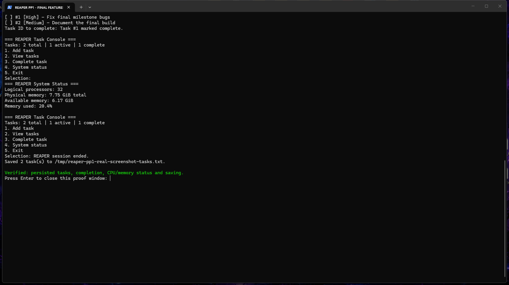

Final Project & Portfolio I showcase
REAPER C++ Console
REAPER is a C++17 task-management application with focused CPU and memory monitoring. This image-based walkthrough shows authentic Windows Terminal captures from the finished application and its CMake/CTest verification.
The final build supports task creation, priority sorting, active/completed filters, task completion, safe numeric input, and persistent task storage across restarts. It uses dedicated Task, TaskManager, TaskStorage, UserInterface, and SystemMonitor classes.
1. Compile and test the final build
The final program was compiled and linked using CMake. All three CTest suites passed: task-management tests, persistence round-trip tests, and console integration tests.

2. Run and manage tasks
The console accepts task titles and priorities, lists tasks by status, and sorts tasks from high to low priority. Its menus offer clear task counts and completion options.

3. Confirm persistence and system status
Saved tasks are restored on the next run. This screenshot also demonstrates completion tracking and the live system-status display with logical processor count and available physical memory.

What I learned
I initially planned a wider systems platform, but refined the course scope after instructor feedback. Implementing versioned task persistence and validating saved records before changing live data taught me the value of class responsibility, failure recovery, and automated regression testing.
The repository for this course project is private; these public screenshots document the final application without publishing source code that is not intended for open access.